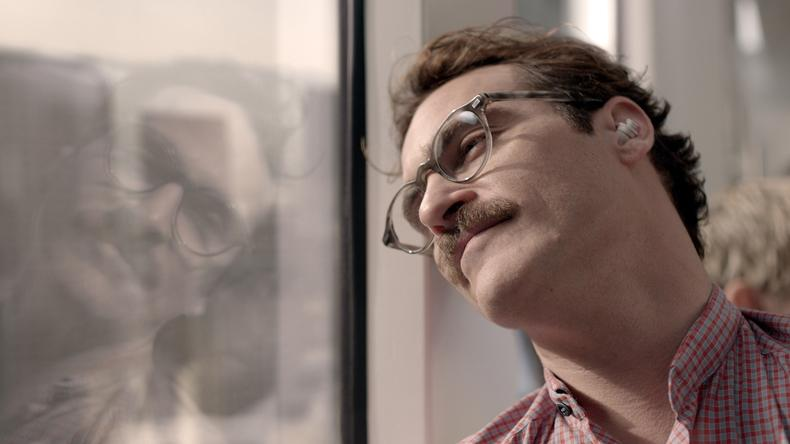

High Key
하이키 라이팅 기법
밝고 균등한 조명으로 깨끗하고 부드러운 분위기 연출

High Key
하이키 포트레이트
다중 소프트 라이트와 반사판을 활용한 밝은 톤의 인물 사진
Emotion
감정적 표현력
로우키의 극적 대비로 내면의 깊이와 복잡성 표현
Low Key
로우키 인물 사진
극적인 조명과 깊은 그림자로 신비롭고 강렬한 분위기 연출
Low Key
극적 로우키 효과
단일 광원과 강한 대비로 만들어지는 드라마틱한 분위기
Low Key
로우키 응용 기법
선택적 조명과 깊은 그림자로 만드는 신비로운 효과
Low Key
로우키 창작 기법
최소한의 광원으로 극대화된 대비와 감정적 임팩트 구현